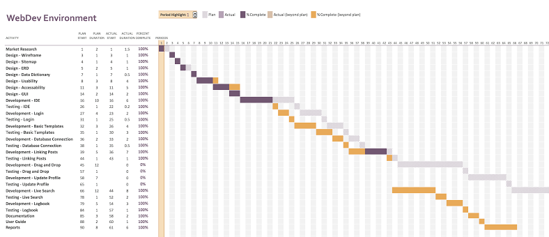

Creating an API/Social Media type web application has been an experience to say the least. From the get go, understanding what an API was and what was needed of us students from this unit was a struggle. Being the first ever coursework I undertook where we students created a mark scheme (40%) for our own product was rather confusing as for me personally it was hard to tell what was ‘good enough’ for a mark.
I was one of the few students who changed their idea for the coursework after the first interim (hence why the first and second interim reports are different), so preparing a mark scheme and plan in such a short time was challenging. I found that market research based around the coursework topic would be key in finding an initial idea as well as preparing a sufficient mark scheme for the coursework; looking at existing products that are similar to my coursework idea gave me a fairly clear idea of the end result I wanted to achieve.
On the other hand, once handed in my proposal and work on my API began, it became clear that some marks and tasks I set myself we either redundant or not relevant to the purpose of the API/Social media. This was frustrating to me as I knew I was losing marks due to a blunder where not enough thought/market research went into my idea, may it be only a few marks. Notice in Figure 1 that some fields have been left empty. This are the ‘redundant’ or ‘irrelevant’ parts of my coursework where poor planning really shows on my part.
For my coursework, I decided on using the incremental lifecycle so I could focus on one bit of the coursework at a time therefore getting the best understanding possible about the techniques/PHP/JavaScript so I could learn more. This was a partial success as I began to use an Agile method alongside the incremental lifecycle. This meant that after I was ‘finished’ with a task that I would prototype it on the website for testing purposes and seeing what I needed to change.
THIS WAS VERY HELPFUL AND EFFECTIVE!Due to this method, I felt like my quality in work and product improved as I was able to spend time in browser understanding the capabilities of the prototype I produced as use the browsers developer tools to change the webpage/prototype before making a definite change to files.
I also found myself saving time on testing each task in my incremental lifecycle (see Figure 1) as I was testing the prototype throughout its development and therefore found that I was setting more time then needed for testing in my GANTT chart for this coursework.
Due to finding redundancies in my mark scheme, this meant that certain tasks in my GANTT chart weren’t need resulting in me making more time and/or starting tasks way ahead of the initial schedule. Even so, my time management was poor as I didn’t take into consideration other courseworks needing attention as well as numerous hospital visits due to ill health. This raise stress levels and made things really difficult and soon other courseworks, let alone Web Script, were suffering due to poor time management. As a result, I found myself working late into the nights trying to finish tasks for my Web Script which then affected my health making me lose more time for coursework.
NOT IDEALThis made me realise that even though I didn’t do everything that I proposed for my mark scheme that I still had so much work to do, almost too much that I could handle. This also proves how important planning is.
DON’T TAKE ON SOMETHING THAT YOU CAN’T HANDLE!Overall, I believe my product was a success based on what I accomplish through my mark scheme as well as teaching me a valuable learn in planning and time management. This type of course is similar to another unit I Took this year except I was a member of a team so it hit me hard when I knew that I couldn’t really on anyone to help me in the sense of lift the weight off my shoulders in terms of the product, although I enjoyed the challenge.
Note: The screenshot in Figure 1 was taken upon finishing this report (hence why the ‘Report’ section has been completed/filled.